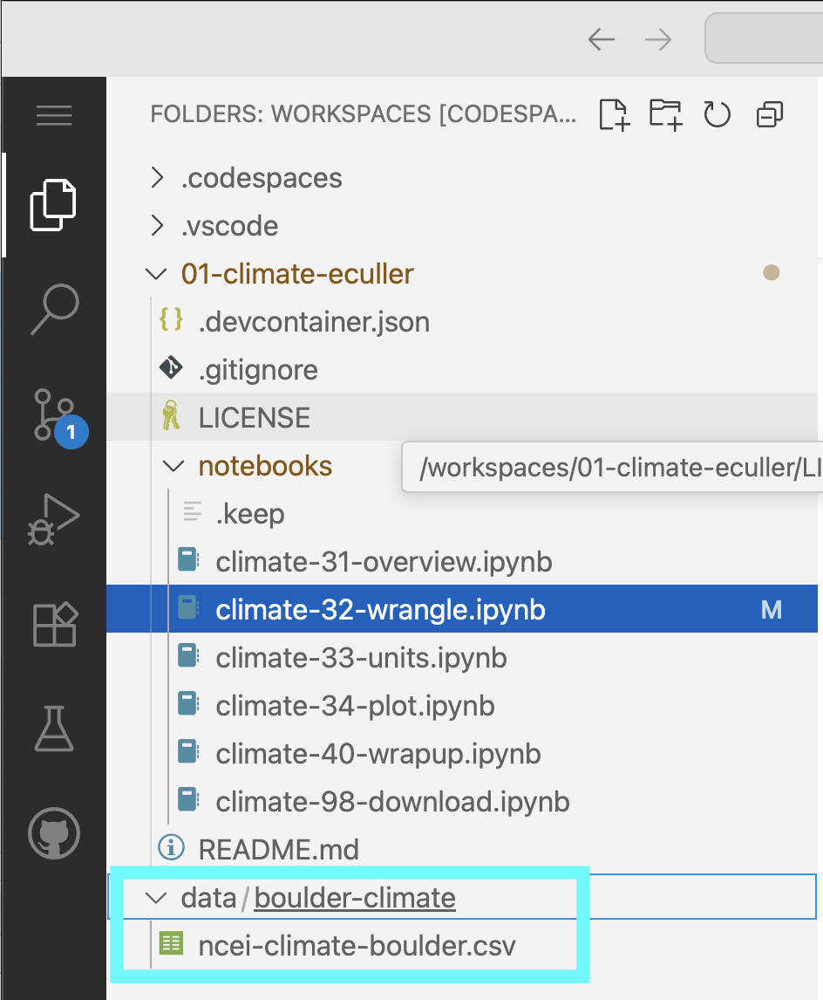
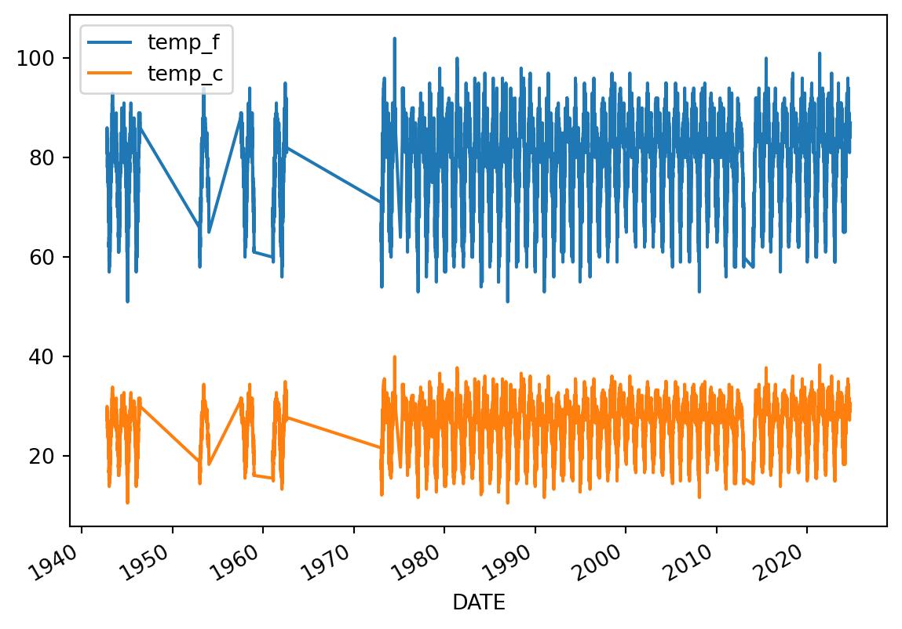
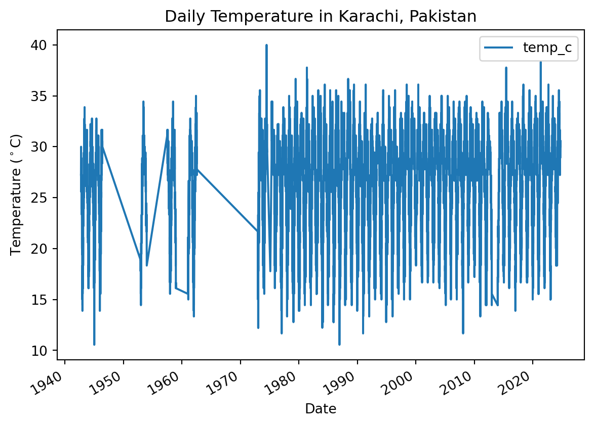
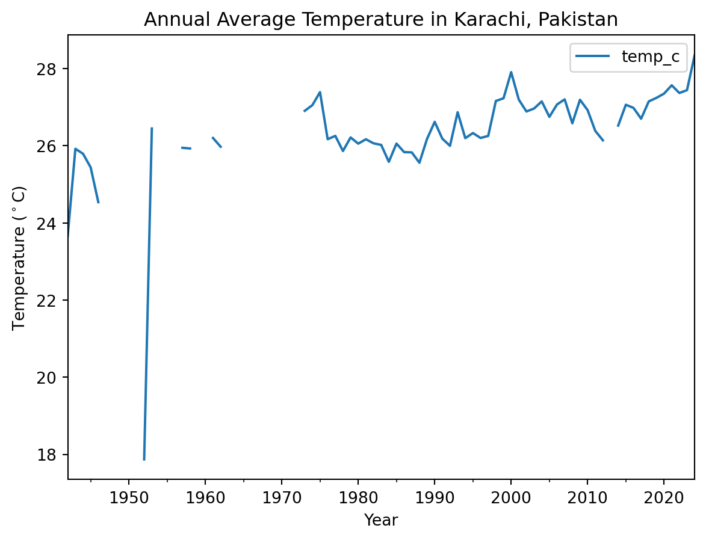

id = 'shortcourse'
ncei_filename = 'ncei-climate-karachi.csv'
project_name = 'Karachi Climate'
location = 'Karachi, Pakistan'
station_id = 'PKM00041780'
start_date = '1942-10-01'
end_date = '2024-09-30'
data_type = 'TAVG'Climate Coding Challenge
Climate change is impacting the way people live around the world
Learning Goals:
- Analyze temperature data over time
- Parse date information so that it is represented as a datetime type
- Use operators to convert to different units
- Resample time-series data to different frequencies
Part 1: Overview
Higher highs, lower lows, storms, and smoke – we’re all feeling the effects of climate change. In this workflow, you will take a look at trends in temperature over time in Karachi, Pakistan.
DiscussConversation Starter
In a bulleted list, how is climate change affecting your home?
What the fork?! Who wrote this?
For this challenge, you’ll be running a scientific workflow in Python. But something’s wrong – The code won’t run! Your task is to follow the instructions below to clean and debug the Python code below so that it runs.
Tip
Don’t worry if you can’t solve every bug right away. We’ll get there! If you are working on one bug for more than about 10 minutes, it’s time to ask for help.
Alright! Let’s clean up this code.
VideoCheck out our demo video!
Before we get started, let’s define some parameters. You can use these if you want to change how the workflow runs from the top:
Wrangle your data
Python packages let you use code written by experts around the world
Because Python is open source, lots of different people and organizations can contribute (including you!). Many contributions are in the form of packages which do not come with a standard Python download.
ReadRead More: Packages need to be installed and imported.
Learn more about using Python packages. How do you find and use packages? What is the difference between installing and importing packages? When do you need to do each one? This article on Python packages will walk you through the basics.
In the cell below, someone was trying to import the pandas package, which helps us to work with tabular data such as comma-separated value or csv files (e.g. data with rows and columns like a spreadsheet). But something’s wrong!
TaskTry It: Import packages
- Correct the typo below to properly import the
pandaspackage under its alias pd. - Add a descriptive comment next to the pandas package explaining what it does. You can add comments using the
#symbol, just like we did for you with theearthpypackage. - Run the cell to import the libraries you’ll need for this workflow.
# Import libraries
import earthpy # Manage local data
import holoviews as hv # Save interactive plots
import hvplot.pandas # Make interactive plots
import pandsa as pdSTEP 1: Download the practice data
Next, lets download some climate data from Karachi, Pakistan to practice with. The data will come in comma-separate value, or CSV format.
ReadRead More: Tabular data
Learn more about tabular data and CSV files in the this article on text files in Earth Data Science.
TaskTry It: Save the URL for later
- Replace
Project Name Herewith the actual project name, Karachi Climate. - Replace
data-folder-name-herewith a descriptive name for your data folder. - Run the cell. Can you find the data on your computer?
# Set up project folders
project = earthpy.Project(
'Project Name Here',
dirname='data-folder-name-here')
# Download data
project.get_data()
# Check where the data ended up
project.project_dirDownloading from https://ndownloader.figshare.com/files/55245161PosixPath('/home/runner/.local/share/earth-analytics/karachi-climate')If you are on GitHub Codespaces, you should be able to see your data in your Explorer tab.

data folder mounted there.You can also take a look at your data using the bash programming language, either in your terminal or here in your Jupyter notebook (the ! indicates to use the current bash process, and the {} indicates to use a Python variable):
!ls "{project.project_dir}"ncei-climate-karachi.csvSTEP 2: Import data to Python
The pandas library you imported can download data from the internet directly into a type of Python object called a DataFrame. In the code cell below, you can see an attempt to do just this. But there are some problems…
TaskTry It: Fix some code!
Make any changes needed to get this code to run. HINT: The
filename.csvisn’t correct - you need to replace it with the name of the file you downloaded! See if you can find where the data downloaded to.The
pd.read_csv()function isn’t formatting the data 100% correctly. Modify the code to include the following additional parameters, making sure to put a comma (,) in-between each parameter:index_col='DATE'– this sets theDATEcolumn as the index. Needed for subsetting and resampling later onparse_dates=True– this letspythonknow that you are working with time-series data, and values in the indexed column are date time objectsna_values=['NaN']– this letspythonknow how to handle missing values
We can’t get the data back later on because it isn’t saved in a variable. In other words, we need to give the url a name so that we can request in from Python later (sadly, Python has no ‘hey what was that thingy I typed yesterday?’ function). Make sure to use an expressive variable name so you remember what it is later on!
ReadRead More: Names/variables in Python
One of the most common challenges for new programmers is making sure that your results are stored so you can use them again. In Python, this is called naming, or saving a variable. Learn more in this hands-on activity on using variables from our learning portal.
# Load climate data from NCEI
pd.read_csv(
project.project_dir / 'filename.csv'
)| STATION | TAVG | |
|---|---|---|
| DATE | ||
| 1942-10-01 | PKM00041780 | 81 |
| 1942-10-02 | PKM00041780 | 81 |
| 1942-10-03 | PKM00041780 | 84 |
| 1942-10-04 | PKM00041780 | 84 |
| 1942-10-05 | PKM00041780 | 84 |
| ... | ... | ... |
| 2024-09-26 | PKM00041780 | 87 |
| 2024-09-27 | PKM00041780 | 87 |
| 2024-09-28 | PKM00041780 | 86 |
| 2024-09-29 | PKM00041780 | 87 |
| 2024-09-30 | PKM00041780 | 87 |
19371 rows × 2 columns
Tip
Check out the type() function below - you can use it to check that your data is now in DataFrame type object.
# Check that data was imported into a pandas DataFrame
type(climate_df)STEP 3: Clean up your DataFrame
TaskTry It: Get rid of unwanted columns
You can use double brackets ([[ and ]]) to select only the columns that you want from your DataFrame:
- Change
some_column_nameto the Temperature column name. - Put quotes around your column name so Python interprets it as text and not a variable name.
- Clean up the code by using descriptive comments.
climate_df = climate_df[[some_column_name]]
climate_df| TAVG | |
|---|---|
| DATE | |
| 1942-10-01 | 81 |
| 1942-10-02 | 81 |
| 1942-10-03 | 84 |
| 1942-10-04 | 84 |
| 1942-10-05 | 84 |
| ... | ... |
| 2024-09-26 | 87 |
| 2024-09-27 | 87 |
| 2024-09-28 | 86 |
| 2024-09-29 | 87 |
| 2024-09-30 | 87 |
19371 rows × 1 columns
Convert units
It’s important to keep track of the units of all your data. You don’t want to be like the NASA team who crashed a probe into Mars because different teams used different units)!
Use labels to keep track of units for you and your collaborators
One way to keep track of your data’s units is to include the unit in data labels. In the case of a DataFrame, that usually means the column names.
TaskTry It: Add units to your column name
A big part of writing expressive code is descriptive labels. Let’s rename the columns of your dataframe to include units. Complete the following steps:
- Replace
dataframewith the name of yourDataFrame, anddataframe_unitswith an expressive new name. - Check out the documentation for GCHNd data. We downloaded data with “standard” units; find out what that means for temperature.
- Replace
'temperature-column-name'with the temperature column name in your data, and'temp_unit'with a column name that includes the correct unit. For example, you could make a column called'temperature_k'to note that your temperatures are in degrees Kelvin.
dataframe_units = dataframe.rename(columns={
'temperature-column-name': 'temp_unit',
})
dataframe_units| temp_f | |
|---|---|
| DATE | |
| 1942-10-01 | 81 |
| 1942-10-02 | 81 |
| 1942-10-03 | 84 |
| 1942-10-04 | 84 |
| 1942-10-05 | 84 |
| ... | ... |
| 2024-09-26 | 87 |
| 2024-09-27 | 87 |
| 2024-09-28 | 86 |
| 2024-09-29 | 87 |
| 2024-09-30 | 87 |
19371 rows × 1 columns
For scientific applications, it is often useful to have values in metric units
In this case, we want to convert data from degrees Fahrenheit to degrees Celcius. The equation for converting Fahrenheit temperature to Celcius is:
\[T_C = (T_F - 32) * \frac{5}{9}\]
TaskTry It: Convert units
The code below attempts to convert the data to Celcius, using Python mathematical operators, like +, -, *, and /. Mathematical operators in Python work just like a calculator, and that includes using parentheses to designate the order of operations.
This code is not well documented and doesn’t follow PEP-8 guidelines, which has caused the author to miss an important error!
Complete the following steps:
- Replace
dataframewith the name of yourDataFrame. - Replace
'old_temperature'with the column name you used; Replace'new_temperature'with an expressive column name. - THERE IS AN ERROR IN THE CONVERSION MATH - Fix it!
dataframe_units['new_temperature'] = (dataframe_units['old_temperature']-32*5/9)
dataframe_units| temp_f | temp_c | |
|---|---|---|
| DATE | ||
| 1942-10-01 | 81 | 27.222222 |
| 1942-10-02 | 81 | 27.222222 |
| 1942-10-03 | 84 | 28.888889 |
| 1942-10-04 | 84 | 28.888889 |
| 1942-10-05 | 84 | 28.888889 |
| ... | ... | ... |
| 2024-09-26 | 87 | 30.555556 |
| 2024-09-27 | 87 | 30.555556 |
| 2024-09-28 | 86 | 30.000000 |
| 2024-09-29 | 87 | 30.555556 |
| 2024-09-30 | 87 | 30.555556 |
19371 rows × 2 columns
ExtraLooking for an Extra Challenge?
Using the code below as a framework, write and apply a function that converts to Celcius. You should also rewrite this function name and parameter names to be more expressive.
# Convert units with a function
def convert(temperature):
"""Convert Fahrenheit temperature to Celcius"""
return temperature # Put your equation in here
dataframe['TEMP_C'] = (
dataframe['TEMP_F'].apply(convert))Plot your results
STEP 1: Plot the temperature column vs time to explore the data
Plotting in Python is easy, but not quite this easy:
climate_u_df.plot()
Looks like we have both temperature units on the same plot, and it’s hard to see what it is because it’s missing labels!
TipLabel your plot

Make sure each plot has:
- A title that explains where and when the data are from
- x- and y- axis labels with units where appropriate
- A legend where appropriate
When plotting in Python, you’ll always need to add some instructions on labels and how you want your plot to look.
TaskTry It: Plot your data
- Change
dataframeto yourDataFramename. - Change
y=to the name of your temperature column name. - Use the
title,ylabel, andxlabelparameters to add key text to your plot. - Adjust the size of your figure using
figsize=(x,y)wherexis figure width andyis figure height
Tip
Labels have to be a type in Python called a string. You can make a string by putting quotes around your label, just like the column names in the sample code (eg y='temperature').
# Plot the data using .plot
climate_u_df.plot(
y='the_temperature_column',
title='Title Goes Here',
xlabel='Horizontal Axis Label Goes Here',
ylabel='Vertical Axis Label Goes Here')
ExtraLooking for an Extra Challenge?
There are many other things you can do to customize your plot. Take a look at the pandas plotting galleries and the documentation of plot to see if there’s other changes you want to make to your plot. Some possibilities include:
- Remove the legend since there’s only one data series
- Increase the figure size
- Increase the font size
- Change the colors
- Use a bar graph instead (usually we use lines for time series, but since this is annual it could go either way)
- Add a trend line
Not sure how to do any of these? Try searching the internet, or asking an AI!
STEP 2: Clean up time series plots by resampling
You may notice that your plot looks a little “fuzzy”. This happens when Python is trying to plot a value for every date, but the resolution of the image is too low to actually do that. You can address this issue by resampling the data, or summarizing it over a time period of your choice. In this case, we will resample annually, giving us one data point per year.
TaskTry It: Resample
- Set the frequency of your final data by replacing
DT_OFFSETwith a Datetime Offset Code. Check out the table in the pandas datetime documentation to find the one you want (we recommend the start of the year). - Choose how to summarize each year of data by replacing
agg_method_herewith a method that will calculate the average annual value. Check out the pandas resampling documentation for a list of common built-in options. - Add descriptive comments to the code so the next person reading it knows what it is doing.
ann_climate_df = (
climate_u_df
.resample('DT_OFFSET')
.agg_method_here()
)
ann_climate_df| temp_f | temp_c | |
|---|---|---|
| DATE | ||
| 1942-01-01 | 74.597826 | 23.665459 |
| 1943-01-01 | 78.654795 | 25.919330 |
| 1944-01-01 | 78.423497 | 25.790832 |
| 1945-01-01 | 77.786301 | 25.436834 |
| 1946-01-01 | 76.164474 | 24.535819 |
| ... | ... | ... |
| 2020-01-01 | 81.229508 | 27.349727 |
| 2021-01-01 | 81.617729 | 27.565405 |
| 2022-01-01 | 81.257618 | 27.365343 |
| 2023-01-01 | 81.391185 | 27.439547 |
| 2024-01-01 | 83.018939 | 28.343855 |
83 rows × 2 columns
TaskTry It: Plot Annual Data
- Try plotting your new DataFrame in the cell below. Can you see what is going on more clearly now? Don’t forget to adjust your labels!
- If you write your code on one line, it will most likely be to long to read without scrolling. Make sure you are following PEP-8 style guidelines by keeping your lines less than 80 characters long. If you are working in GitHub Codespaces, we have set you up with a vertical guide that is between 79 and 80 characters – make sure your code doesn’t go past it!
- PEP-8 also suggests aligning any function parameters that are too long. See some examples below for what to do and what not to do.
TipPEP-8 tips!
Following the PEP-8 style guide is important because it makes your code easy for you and other collaborators to read. When you are splitting function calls across multiple lines, your code should look like this:
my_dataframe.plot(
y='column_name',
title=f'My Fantastic Plot',
xlabel='The x Axis',
ylabel='The y Axis'
)or maybe this:
my_dataframe.plot(y='column_name',
title=f'My Fantastic Plot',
xlabel='The x Axis',
ylabel='The y Axis')
Warning
Try to avoid these PEP-8 violations:
my_dataframe.plot(y='column_name', title=f'My Fantastic Plot', xlabel='The x Axis', ylabel='The y Axis')or
my_dataframe.plot(
y='column_name',
title=f'My Fantastic Plot',
xlabel='The x Axis',
ylabel='The y Axis'
)or
my_dataframe.plot(y='column_name',
title=f'My Fantastic Plot',
xlabel='The x Axis',
ylabel='The y Axis'
)# Plot the annual data
RespondReflect and Respond: Interpret your plot
- Create a new Markdown cell below this one.
- Using a bulleted list in Markdown, write down 2 things you notice about the data. What physical phenomena or data anomaly could be causing each one?
STEP 3: Check specific values with an interactive plot
You can use the .hvplot() method with similar arguments to create an interactive plot.
TaskTry It: Interactive Plot
- Copy your plotting code into the cell below.
- Replace
.plotin your code with.hvplot - Check that your code follows PEP-8 guidelines.
Now, you should be able to hover over data points and see their values!
# Plot the annual data interactively
RespondReflect and Respond: Explore the data
- Create a new Markdown cell below this one.
- Hover over the lowest point on your plot. What is the overall maximum annual average temperature?
BONUS: Save your work
You will need to save your analyses and plots to tell others about what you find.
ExtraLooking for an Extra Challenge?: Save Your Plot
Just like with any other type of object in Python, if you want to reuse your work, you need to give it a name.
- Go back to your
hvplotcode, and give your plot a name by assigning it to a variable. HINT: if you still want your plot to display in your notebook, make sure to call its name at the end of the cell. - Replace
my_plotwith the name you gave to your plot. - Replace
'my_plot.html'with the name you want for your plot. If you change the file extension,.html, to.png, you will get an image instead of an interactive webpage, provided you have the necessary libraries installed.
Once you run the code, you should see your saved plot in your files – go ahead and open it up.
Warning
If you are working in GitHub Codespaces, right-click on your file and download it to view it after saving.
hv.save(my_plot, 'my_plot.html')